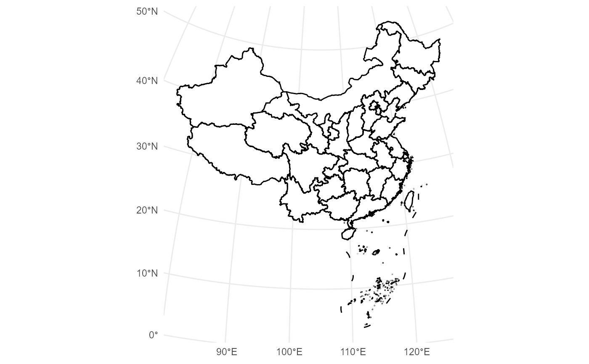

`geom_mapcn()` draws China's administrative units with a simple, opinionated interface. When `data` is `NULL`, it loads packaged map data for the requested administrative level, optionally applies attribute-based filtering, removes internal clipping rows, and reprojects the layer to the target CRS.
In typical use, `geom_mapcn()` is combined with `geom_boundary_cn()` to draw coastlines, national borders, and other boundary features on top of the administrative polygons.
Usage
geom_mapcn(
data = NULL,
admin_level = "province",
crs = "+proj=aeqd +lat_0=35 +lon_0=105 +ellps=WGS84 +units=m +no_defs",
color = "black",
fill = "white",
linewidth = 0.1,
filter_attribute = NULL,
filter = NULL,
mapping = NULL,
...
)Arguments
- data
An `sf` object with geometries to draw. If `NULL`, the function loads the packaged dataset corresponding to `admin_level`.
- admin_level
Administrative level to plot. One of `"province"` (default), `"city"`, or `"county"`. These map to packaged files `China_sheng.rda`, `China_shi.rda`, and `China_xian.rda`, respectively.
- crs
Coordinate reference system used for plotting. Defaults to an azimuthal equidistant projection centered on China: `"+proj=aeqd +lat_0=35 +lon_0=105 +ellps=WGS84 +units=m +no_defs"`. Accepts PROJ strings or EPSG codes (e.g., `"EPSG:4326"`).
- color
Border color for polygons. Default `"black"`.
- fill
Fill color for polygons. Default `"white"`.
- linewidth
Border line width. Default `0.1`. For older `ggplot2` versions, use `size` instead of `linewidth`.
- filter_attribute
Optional name of an attribute column used to filter features (e.g., `"name_en"`).
- filter
Optional character vector of values to keep in `filter_attribute` (e.g., `c("Beijing", "Shanghai")`). If supplied together with `filter_attribute`, features are subsetted accordingly. If no features remain after filtering, an error is thrown.
- mapping
Optional aesthetics mapping passed to `ggplot2::geom_sf()`. This is useful when additional aesthetics (e.g., `fill`) should be mapped from columns in `data`.
- ...
Additional arguments forwarded to `ggplot2::geom_sf()`.
Details
If `data` is `NULL`, `geom_mapcn()` selects one of the packaged datasets:
* `admin_level = "province"` → `China_sheng.rda` * `admin_level = "city"` → `China_shi.rda` * `admin_level = "county"` → `China_xian.rda`
The file is ensured to exist locally via `check_geodata()`, which may reuse an existing copy in the package `extdata` directory or user cache, or download it from the external repository when necessary. The `.rda` file is then loaded from the resolved path, and the main `sf` object is extracted.
A special row labelled `"Boundary Line"` (used for technical clipping) is removed automatically when present. Attribute-based filtering can be applied using `filter_attribute` and `filter` before reprojecting to the target CRS.
Examples
# 1. Basic provincial map (recommended: combine with geom_boundary_cn)
ggplot() +
geom_mapcn() +
geom_boundary_cn() +
theme_minimal()

# 2. City-level map with custom fill and boundaries
ggplot() +
geom_mapcn(
admin_level = "city",
fill = "grey95",
color = "grey60"
) +
geom_boundary_cn(province_color = "grey40") +
theme_bw()

# 3. Filter by attribute (e.g., English names) and highlight selected provinces
ggplot() +
geom_mapcn(
filter_attribute = "name_en",
filter = c("Beijing", "Shanghai"),
fill = "tomato"
) +
geom_boundary_cn() +
theme_minimal()
 # 4. Use a different projection (e.g., Albers equal-area)
albers_cn <- "+proj=aea +lat_1=25 +lat_2=47 +lat_0=0 +lon_0=105 +datum=WGS84"
ggplot() +
geom_mapcn(crs = albers_cn, linewidth = 0.3) +
geom_boundary_cn(crs = albers_cn) +
coord_sf(crs = albers_cn) +
theme_minimal()
# 4. Use a different projection (e.g., Albers equal-area)
albers_cn <- "+proj=aea +lat_1=25 +lat_2=47 +lat_0=0 +lon_0=105 +datum=WGS84"
ggplot() +
geom_mapcn(crs = albers_cn, linewidth = 0.3) +
geom_boundary_cn(crs = albers_cn) +
coord_sf(crs = albers_cn) +
theme_minimal()